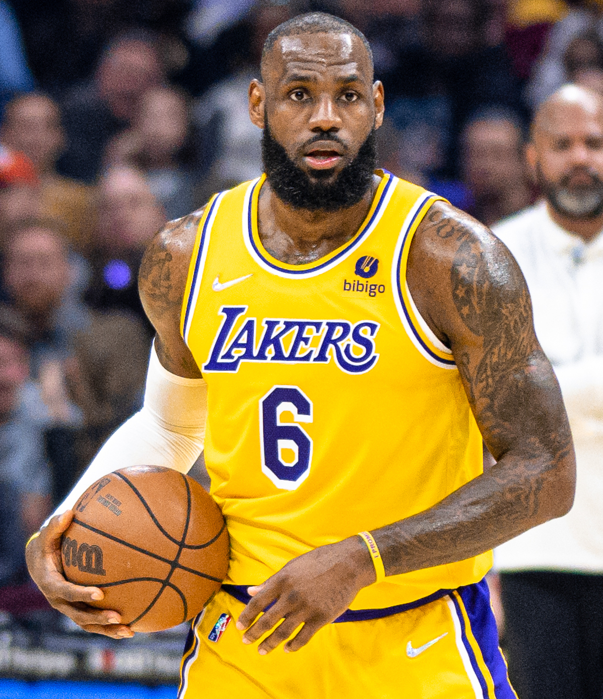

About LeBron
LeBron Raymone James was born on December 30, 1984, in Akron, Ohio. He entered the NBA straight out of high school in 2003 and quickly became one of the most dominant players in the league. Over more than two decades, he has played for the Cleveland Cavaliers, Miami Heat, and Los Angeles Lakers, winning multiple NBA championships along the way. Beyond basketball, he is known for his philanthropy, including founding the "I Promise School" for at-risk children in his hometown.

Key Events
- 2003 — Drafted 1st overall by the Cleveland Cavaliers
- 2010 — Joined the Miami Heat, forming the "Big Three"
- 2012 & 2013 — Won back-to-back NBA championships with Miami
- 2016 — Led Cleveland to their first NBA title, coming back from a 3-1 deficit
- 2020 — Won a championship with the Los Angeles Lakers
- 2023 — Became the NBA's all-time leading scorer
Achievements & Contributions
- 4× NBA Champion
- 4× NBA Finals MVP
- 4× NBA Most Valuable Player (regular season)
- NBA all-time leading scorer
- Founder of the "I Promise School" in Akron, Ohio
Learn more about his career and life on Wikipedia or follow him on Instagram.
Learn More